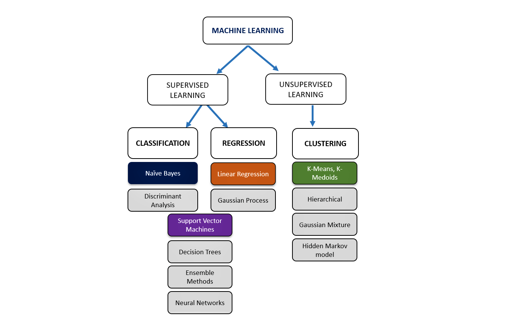

This section covers at least one of the machine learning technique as highlighted in the flow diagram below.

This section covers at least one of the machine learning technique as highlighted in the flow diagram below.
The best ML Model was selected to Predict Selling price of a Real Estate Property using a comparison of Linear, ElasticNet, Lasso Regression model with the R-squared, MAE, MSE evaluators

The SVM Algorithm was used to predict and classify wine quality based on composition.
The Selling price of cars was predicted based on Brand, Make and other specifications using the Regression model

The K-means Algorithm was used to group customer into clusters based on certain specified criteria.
Logistic Regression classification model was used to predict and classify patient with possible diagnosis of brain stroke using a number of variables
Building a model that optimizes Precision, Accuracy score to predict and classify patient with heart disease.